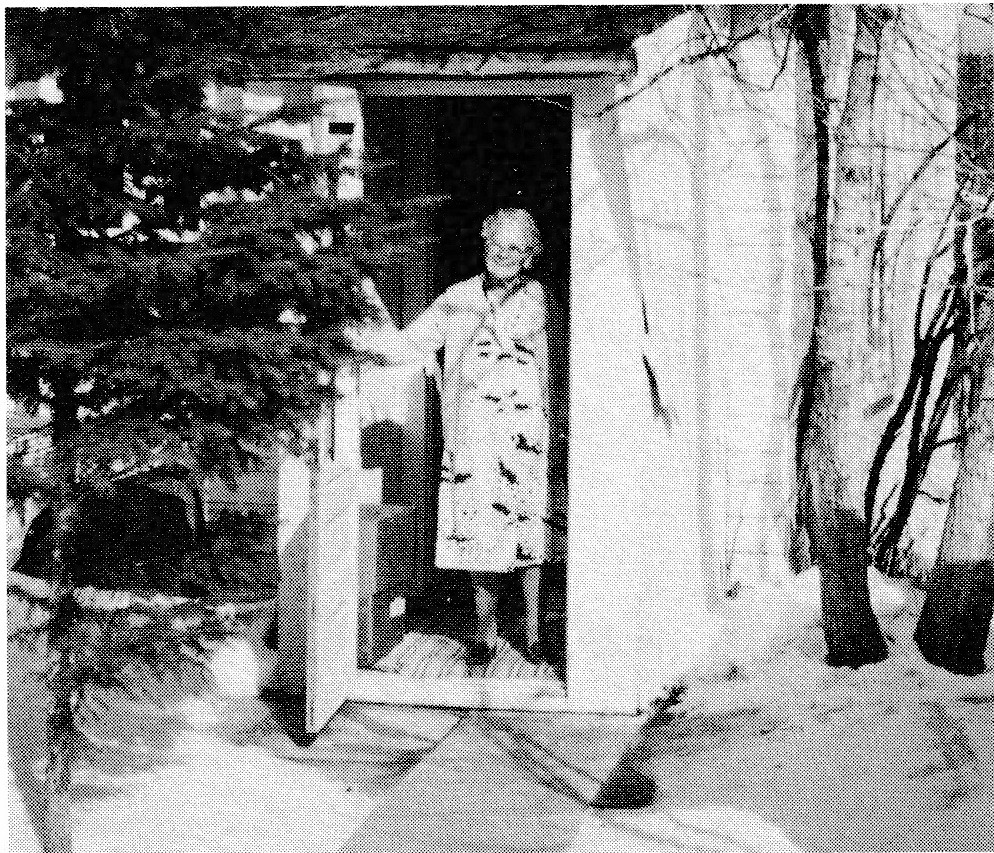
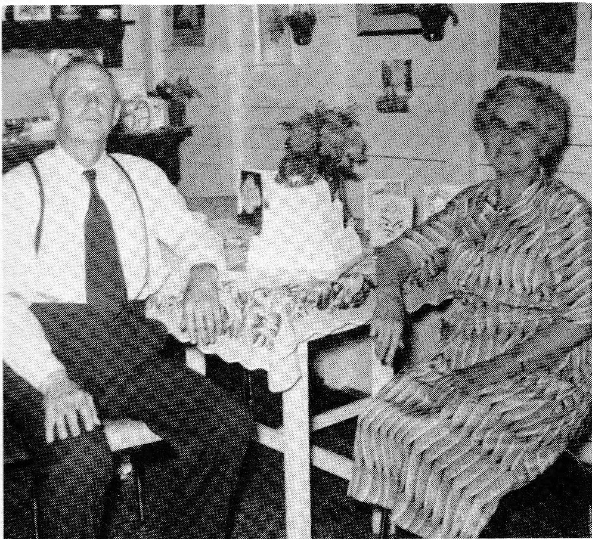

It was around 1952 when Henri was seventy years young that he retired. Shortly after, he was approached by the Forestry Branch to take on the duties of a tower man. The local history book, Valley Echoes, tells us that the combined Porcupine and Pasquia Forest Reserves covered 1,055 square miles. Lookout towers were located as to allow a better view of the area. At first the towers were constructed of wooden poles to a height of forty feet. They were replaced in later years by steel structures with a lookout cabin on top. One such tower located at Mile 13, north of Greenbush, was to be Henri's responsibility. His tower stood eighty feet high. Climbing this was a feat in itself considering Henri's age. His duties were to spot smoke and potential fires and report them by phone to the Forestry Branch.
Once at the tower, Henri usually remained for the week. He drove home Saturday evenings. After attending Mass Sunday mornings, he would collect his supplies and return to the tower. Henri's fire tower duties lasted but a few years.
In July of 1957, Alma and Henri celebrated their 50th Wedding Anniversary beginning with Mass in Saint Anthony's Church in Veillardville. This was followed by a Come and Go Tea at their home. Also, the Veillardville community held a social in their honor.

In the fall of 1960 Henri suffered a stroke which left him severely handicapped. Following a period in the Union Hospital at Hudson Bay, Henri was moved to the Geriatric Centre at Melfort, Saskatchewan. It was here that he died December 19, 1967.
Alma took up residence shortly after in a little wood-frame house in the yard of her daughter's home. Alma enjoyed reading and letter writing for she corresponded frequently with a goodly number of her children and grandchildren. She was always so pleased to receive letters that she lost no time in replying. She also delighted in the many visitors who called. And always the grandchildren warmed her heart in a special way. Together, they would play cards and be treated to the many bonbons she always had on hand.

Her interest in her large family lent purpose to her days. She looked forward to Sunday when she could serve her family as she had in the past. On this day, some made a point of visiting her after they'd been to Mass. Alma prided herself on still being able to do everything herself as she served tea and sandwiches. She and her visitors would reminisce of things of the past, look at old family photos and exchange bits of family news - Alma was interested in each of her thirty-eight grandchildren, forty-six great grandchildren and two great-great grandchildren.
She was hospitalized shortly before her 95th birthday in the Hudson Bay Union Hospital. Family and friends continued to call on her daily. It was here that she remained under the care of her "good Doc Silver" while she was looked after by the many kind nurses who cared and ministered to her in her later years. And it was here that she ended her days on December 15, 1982, at the grand age of ninety-nine. Alma was laid to rest in the Catholic cemetery at Hudson Bay beside Henri.